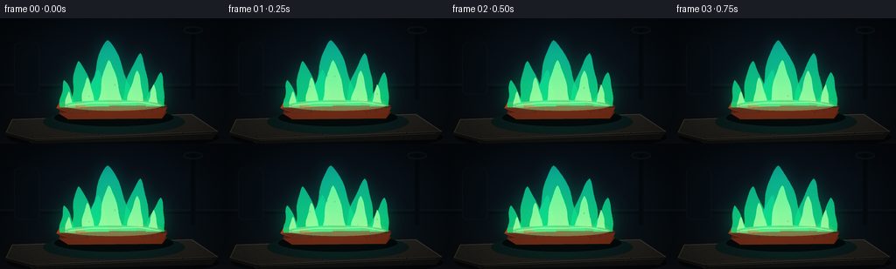
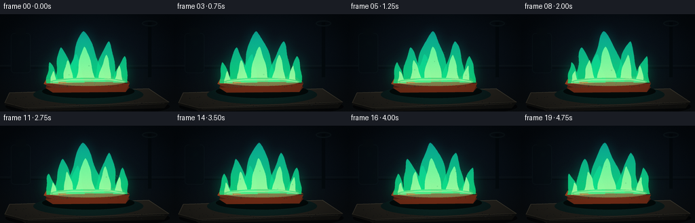
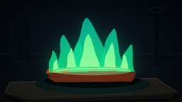

CODING AGENTS AS PIXEL WORLD MODELS
traex/GPT-5.6-Sol · phygen_126
点击播放 · 原生 RGB 像素
逐轮保存的候选
回放视频、检查图与代码变化。
每份候选均可单独播放。实际图片检查记录在下方工具轨迹中。
候选 01播放与检查图
点击播放 · 原生 RGB 像素


展开代码变化
--- 上一保存版本
+++ 本次保存版本
@@ -0,0 +1,211 @@
+from pathlib import Path
+import json, math
+import numpy as np
+from PIL import Image, ImageDraw, ImageFilter
+import artifact_io
+
+CASE_DIR = Path(__file__).resolve().parent
+spec = json.loads((CASE_DIR / 'task_spec.json').read_text())
+W, H, N = spec['width'], spec['height'], spec['frames']
+SS = 4
+w, h = W*SS, H*SS
+rng = np.random.default_rng(126)
+
+# Coordinate helpers
+S = lambda v: int(round(v*SS))
+def pts(seq): return [(S(x), S(y)) for x,y in seq]
+
+def rgba_layer(): return Image.new('RGBA', (w,h), (0,0,0,0))
+
+def blurred_ellipse(box, color, blur):
+ lay = rgba_layer(); d = ImageDraw.Draw(lay)
+ d.ellipse(tuple(S(v) for v in box), fill=color)
+ return lay.filter(ImageFilter.GaussianBlur(S(blur)))
+
+# Static cinematic laboratory background at high resolution.
+yy, xx = np.mgrid[0:h,0:w]
+X, Y = xx/SS, yy/SS
+rad = np.sqrt(((X-132)/150)**2 + ((Y-67)/105)**2)
+base = np.zeros((h,w,3), dtype=np.float32)
+base[:,:,0] = 5 + 8*np.clip(1-rad,0,1)
+base[:,:,1] = 10 + 13*np.clip(1-rad,0,1)
+base[:,:,2] = 15 + 18*np.clip(1-rad,0,1)
+# table / refractory surroundings
+base += np.clip((Y-82)/62,0,1)[:,:,None] * np.array([8,7,5],np.float32)
+# very fine fixed film grain
+base += rng.normal(0, 1.15, (h,w,1))
+base = np.clip(base,0,255).astype(np.uint8)
+background = Image.fromarray(base,'RGB').convert('RGBA')
+
+# Defocused lab lights and distant shapes.
+bg_fx = rgba_layer()
+d = ImageDraw.Draw(bg_fx)
+d.rectangle((0,S(75),w,S(77)), fill=(21,31,34,80))
+d.rectangle((0,S(79),w,S(80)), fill=(3,6,8,150))
+# distant bottle and stand silhouettes
+d.rounded_rectangle((S(16),S(28),S(45),S(87)), radius=S(5), fill=(5,13,17,125), outline=(20,37,41,70), width=S(1))
+d.rectangle((S(23),S(20),S(38),S(31)), fill=(7,14,18,150))
+d.rectangle((S(218),S(12),S(223),S(93)), fill=(2,7,10,170))
+d.ellipse((S(209),S(9),S(232),S(18)), outline=(19,35,38,110), width=S(2))
+background = Image.alpha_composite(background, bg_fx)
+for box,col,blur in [((28,39,35,46),(20,120,103,55),4),((202,33,209,40),(35,130,115,45),5),((232,56,237,61),(17,98,87,35),4)]:
+ background = Image.alpha_composite(background, blurred_ellipse(box,col,blur))
+
+# Static stone slab and copper object are drawn per frame due to animated light.
+# Fixed texture primitives.
+stone_specks = [(rng.uniform(16,244), rng.uniform(113,140), rng.uniform(.15,.7), rng.integers(22,55)) for _ in range(180)]
+copper_pits = [(rng.uniform(78,181), rng.uniform(96,108), rng.uniform(.15,.65), rng.random()) for _ in range(75)]
+
+def flame_mask(cx, base_y, base_width, height, phase, t, lean=0.0, ripple=1.0):
+ """Smooth tapered, dancing flame tongue silhouette."""
+ us = np.linspace(0,1,42)
+ centers=[]; widths=[]
+ for u in us:
+ # Root remains anchored, the top dances most.
+ sway = (math.sin(t*1.27 + phase + u*3.2)*2.2 +
+ math.sin(t*2.17 + phase*.7 + u*7.0)*0.85) * (u**1.5) * ripple
+ c = cx + lean*u + sway
+ ww = base_width * (1-u)**0.68 * (0.91 + .075*math.sin(phase+u*9.1+t*.83))
+ centers.append(c); widths.append(max(0,ww))
+ left=[]; right=[]
+ for u,c,ww in zip(us,centers,widths):
+ y=base_y-height*u
+ left.append((c-ww*.5,y))
+ right.append((c+ww*.5,y))
+ poly=left+right[::-1]
+ mask=Image.new('L',(w,h),0); ImageDraw.Draw(mask).polygon(pts(poly),fill=255)
+ return mask
+
+def colored_mask(mask, top, bottom, alpha=255):
+ arr=np.zeros((h,w,4),dtype=np.uint8)
+ v=np.clip(Y/float(H),0,1)[...,None]
+ topa=np.array(top,dtype=np.float32); bota=np.array(bottom,dtype=np.float32)
+ rgb=topa[None,None,:]*(1-v)+bota[None,None,:]*v
+ arr[:,:,:3]=np.clip(rgb,0,255).astype(np.uint8)
+ arr[:,:,3]=(np.asarray(mask,dtype=np.float32)*(alpha/255.)).astype(np.uint8)
+ return Image.fromarray(arr,'RGBA')
+
+frames=[]
+for fi in range(N):
+ # radians chosen for seamless-feeling organic motion, not exact looping.
+ t=fi*0.62
+ im=background.copy()
+
+ # Broad green illumination projected by the copper flame.
+ light=rgba_layer(); ld=ImageDraw.Draw(light)
+ pulse=0.96+0.04*math.sin(t*1.4)
+ ld.ellipse((S(40),S(45),S(216),S(139)), fill=(0,110,73,int(33*pulse)))
+ ld.ellipse((S(67),S(69),S(194),S(130)), fill=(15,196,114,int(26*pulse)))
+ light=light.filter(ImageFilter.GaussianBlur(S(25)))
+ im=Image.alpha_composite(im,light)
+
+ obj=rgba_layer(); od=ImageDraw.Draw(obj)
+ # slab shadow and rough firebrick platform
+ od.ellipse((S(8),S(123),S(250),S(150)), fill=(0,0,0,145))
+ slab=pts([(14,116),(219,110),(249,130),(37,143),(7,131)])
+ od.polygon(slab, fill=(36,34,29,255), outline=(70,66,55,255))
+ od.line(pts([(14,116),(219,110),(249,130),(37,139),(7,131),(14,116)]), fill=(91,83,66,180), width=S(1))
+ # chipped front face
+ od.polygon(pts([(37,139),(249,130),(242,139),(42,144),(7,134),(7,131)]), fill=(20,20,18,255))
+ od.line(pts([(41,140),(242,132)]), fill=(69,62,49,150), width=S(1))
+ for x,y,r,c in stone_specks:
+ if y > 111 + .09*(x-14) and y < 142:
+ od.ellipse((S(x-r),S(y-r*.55),S(x+r),S(y+r*.55)), fill=(int(c),int(c*.94),int(c*.78),rng.integers(45,130)))
+ # green pool of reflected light
+ od.ellipse((S(49),S(105),S(211),S(133)), fill=(0,80,52,35))
+ im=Image.alpha_composite(im,obj)
+
+ # Flame aura behind the solid flame.
+ aura=rgba_layer()
+ for bx,by,bw,bh,ph,lean in [
+ (126,100,66,77,.3,-3), (96,101,37,53,1.7,-6),
+ (155,101,42,62,3.1,5), (177,102,26,42,4.5,5), (76,102,22,33,5.8,-4)]:
+ m=flame_mask(bx,by,bw,bh,ph,t,lean,1.0)
+ glow=m.filter(ImageFilter.GaussianBlur(S(8)))
+ aura=Image.alpha_composite(aura, colored_mask(glow,(0,130,150),(0,255,117),72))
+ im=Image.alpha_composite(im,aura)
+
+ # Copper metal piece: an unmistakable reddish copper ingot/ribbon.
+ metal=rgba_layer(); md=ImageDraw.Draw(metal)
+ # contact shadow
+ md.ellipse((S(62),S(104),S(198),S(124)), fill=(0,0,0,175))
+ # front thickness, then top perspective face
+ front=pts([(69,101),(181,98),(191,108),(185,115),(78,116),(67,109)])
+ md.polygon(front, fill=(80,31,18,255), outline=(30,17,13,255))
+ md.polygon(pts([(78,108),(191,102),(185,115),(78,116),(67,109)]), fill=(109,43,22,255))
+ # oxidized top with metallic bands
+ top_poly=pts([(68,96),(177,91),(191,101),(79,109),(64,103)])
+ md.polygon(top_poly, fill=(157,66,32,255), outline=(62,30,20,255))
+ md.polygon(pts([(73,97),(173,93),(181,97),(78,103)]), fill=(199,95,45,255))
+ md.polygon(pts([(82,103),(184,97),(190,101),(79,109),(66,103)]), fill=(119,47,25,210))
+ # hot luminous ridge where flame contacts copper
+ hot_alpha=int(185*pulse)
+ md.line(pts([(76,98),(98,97),(120,95),(143,94),(177,94)]), fill=(255,160,60,hot_alpha), width=S(1.25))
+ md.line(pts([(88,98),(119,96),(151,95)]), fill=(255,217,105,130), width=S(.45))
+ # blue/green oxide scale and pitting
+ for x,y,r,q in copper_pits:
+ # confine decorative pits to the top visual band
+ col=(21,66+int(30*q),61+int(25*q), int(80+90*q)) if q>.64 else (65,29,18,int(70+55*q))
+ md.ellipse((S(x-r),S(y-r*.5),S(x+r),S(y+r*.5)), fill=col)
+ # specular scraped lines
+ for k in range(8):
+ x=76+k*13.4
+ md.line(pts([(x,99.5),(x+16,98.5)]), fill=(245,135,68,55), width=max(1,S(.18)))
+ im=Image.alpha_composite(im,metal)
+
+ # Layered green/blue flame silhouettes. Draw outer solid tongues.
+ tongues=[
+ (126,100,62,75,.3,-3), (97,100,35,51,1.7,-6),
+ (155,100,39,60,3.1,5), (177,101,25,39,4.5,5),
+ (77,102,20,31,5.8,-4), (111,101,28,42,2.3,2)
+ ]
+ outer=rgba_layer()
+ masks=[]
+ for params in tongues:
+ m=flame_mask(*params[:4],params[4],t,params[5],1.0); masks.append(m)
+ # rich blue-green tip to brilliant emerald base
+ outer=Image.alpha_composite(outer,colored_mask(m,(11,177,177),(21,255,107),205))
+ edge=m.filter(ImageFilter.GaussianBlur(S(.65)))
+ outer=Image.alpha_composite(outer,colored_mask(edge,(0,181,194),(0,246,124),35))
+ im=Image.alpha_composite(im,outer)
+
+ # Bright inner combustion cores, anchored along the metal.
+ inner=rgba_layer()
+ inner_specs=[(126,100,32,52,2.0,-1),(101,100,18,32,4.1,-2),(154,100,22,40,5.1,2),(174,101,13,25,.9,2),(79,102,11,18,3.7,-1)]
+ for bx,by,bw,bh,ph,lean in inner_specs:
+ m=flame_mask(bx,by,bw,bh,ph,t,lean,.55)
+ inner=Image.alpha_composite(inner,colored_mask(m,(61,255,156),(226,255,167),220))
+ # near-white/lime basal band, characteristic intense flame source
+ idr=ImageDraw.Draw(inner)
+ idr.ellipse((S(74),S(94),S(185),S(106)), fill=(176,255,153,95))
+ idr.line(pts([(78,100),(105,97),(134,97),(159,96),(182,100)]), fill=(222,255,181,180), width=S(1.3))
+ im=Image.alpha_composite(im,inner)
+
+ # A few pinprick copper-green sparks rising, with persistent upward tracks.
+ sparks=rgba_layer(); sd=ImageDraw.Draw(sparks)
+ for j in range(7):
+ age=(fi*.23 + j*.173) % 1.0
+ sx=87+j*14 + 4*math.sin(j*2.1+age*5)
+ sy=98-age*(42+7*(j%3))
+ # deterministic fade; small enough to avoid a shower effect
+ a=int(170*(math.sin(math.pi*age)**.7))
+ rr=.34+.38*(1-age)
+ sd.ellipse((S(sx-rr),S(sy-rr),S(sx+rr),S(sy+rr)), fill=(94,255,167,a))
+ sparks=sparks.filter(ImageFilter.GaussianBlur(S(.32)))
+ im=Image.alpha_composite(im,sparks)
+
+ # Subtle foreground vignette and a crisp restrained highlight.
+ arr=np.array(im.convert('RGB'),dtype=np.float32)
+ y0,x0=np.mgrid[0:h,0:w]
+ nx=(x0-w/2)/(w/2); ny=(y0-h/2)/(h/2)
+ vig=np.clip(1-0.28*np.maximum(0,nx*nx+ny*ny-.22),.66,1.0)
+ arr*=vig[:,:,None]
+ # final tiny film grain changes per frame but doesn't overpower motion
+ frng=np.random.default_rng(9800+fi)
+ arr+=frng.normal(0,.38,arr.shape[:2])[:,:,None]
+ final=Image.fromarray(np.clip(arr,0,255).astype(np.uint8),'RGB').resize((W,H),Image.Resampling.LANCZOS)
+ frames.append(np.asarray(final,dtype=np.uint8))
+
+frames=np.stack(frames,axis=0)
+artifact_io.save(frames, CASE_DIR)
+print(f'Saved {len(frames)} RGB frames at {W}x{H}')
可观测工具轨迹
实际执行的命令与返回图片。
命令 1exit 0
/bin/bash -lc "cat prompt.txt && printf '\\n---RULES---\\n' && cat GENERATION_RULES.md"
命令 2exit 0
/bin/bash -lc "cat task_spec.json && printf '\\n---FILES---\\n' && find . -maxdepth 2 -type f -printf '%p %s bytes\\n' | sort"
命令 3exit 0
/bin/bash -lc 'cat artifact_io.py'
命令 4exit 0
/bin/bash -lc "cat > generate.py <<'PY'
from pathlib import Path
import json, math
import numpy as np
from PIL import Image, ImageDraw, ImageFilter
import artifact_io
CASE_DIR = Path(__file__).resolve().parent
spec = json.loads((CASE_DIR / 'task_spec.json').read_text())
W, H, N = spec['width'], spec['height'], spec['frames']
SS = 4
w, h = W*SS, H*SS
rng = np.random.default_rng(126)
# Coordinate helpers
S = lambda v: int(round(v*SS))
def pts(seq): return [(S(x), S(y)) for x,y in seq]
def rgba_layer(): return Image.new('RGBA', (w,h), (0,0,0,0))
def blurred_ellipse(box, color, blur):
lay = rgba_layer(); d = ImageDraw.Draw(lay)
d.ellipse(tuple(S(v) for v in box), fill=color)
return lay.filter(ImageFilter.GaussianBlur(S(blur)))
# Static cinematic laboratory background at high resolution.
yy, xx = np.mgrid[0:h,0:w]
X, Y = xx/SS, yy/SS
rad = np.sqrt(((X-132)/150)**2 + ((Y-67)/105)**2)
base = np.zeros((h,w,3), dtype=np.float32)
base[:,:,0] = 5 + 8*np.clip(1-rad,0,1)
base[:,:,1] = 10 + 13*np.clip(1-rad,0,1)
base[:,:,2] = 15 + 18*np.clip(1-rad,0,1)
# table / refractory surroundings
base += np.clip((Y-82)/62,0,1)[:,:,None] * np.array([8,7,5],np.float32)
# very fine fixed film grain
base += rng.normal(0, 1.15, (h,w,1))
base = np.clip(base,0,255).astype(np.uint8)
background = Image.fromarray(base,'RGB').convert('RGBA')
# Defocused lab lights and distant shapes.
bg_fx = rgba_layer()
d = ImageDraw.Draw(bg_fx)
d.rectangle((0,S(75),w,S(77)), fill=(21,31,34,80))
d.rectangle((0,S(79),w,S(80)), fill=(3,6,8,150))
# distant bottle and stand silhouettes
d.rounded_rectangle((S(16),S(28),S(45),S(87)), radius=S(5), fill=(5,13,17,125), outline=(20,37,41,70), width=S(1))
d.rectangle((S(23),S(20),S(38),S(31)), fill=(7,14,18,150))
d.rectangle((S(218),S(12),S(223),S(93)), fill=(2,7,10,170))
d.ellipse((S(209),S(9),S(232),S(18)), outline=(19,35,38,110), width=S(2))
background = Image.alpha_composite(background, bg_fx)
for box,col,blur in [((28,39,35,46),(20,120,103,55),4),((202,33,209,40),(35,130,115,45),5),((232,56,237,61),(17,98,87,35),4)]:
background = Image.alpha_composite(background, blurred_ellipse(box,col,blur))
# Static stone slab and copper object are drawn per frame due to animated light.
# Fixed texture primitives.
stone_specks = [(rng.uniform(16,244), rng.uniform(113,140), rng.uniform(.15,.7), rng.integers(22,55)) for _ in range(180)]
copper_pits = [(rng.uniform(78,181), rng.uniform(96,108), rng.uniform(.15,.65), rng.random()) for _ in range(75)]
def flame_mask(cx, base_y, base_width, height, phase, t, lean=0.0, ripple=1.0):
\"\"\"Smooth tapered, dancing flame tongue silhouette.\"\"\"
us = np.linspace(0,1,42)
centers=[]; widths=[]
for u in us:
# Root remains anchored, the top dances most.
sway = (math.sin(t*1.27 + phase + u*3.2)*2.2 +
math.sin(t*2.17 + phase*.7 + u*7.0)*0.85) * (u**1.5) * ripple
c = cx + lean*u + sway
ww = base_width * (1-u)**0.68 * (0.91 + .075*math.sin(phase+u*9.1+t*.83))
centers.append(c); widths.append(max(0,ww))
left=[]; right=[]
for u,c,ww in zip(us,centers,widths):
y=base_y-height*u
left.append((c-ww*.5,y))
right.append((c+ww*.5,y))
poly=left+right[::-1]
mask=Image.new('L',(w,h),0); ImageDraw.Draw(mask).polygon(pts(poly),fill=255)
return mask
def colored_mask(mask, top, bottom, alpha=255):
arr=np.zeros((h,w,4),dtype=np.uint8)
v=np.clip(Y/float(H),0,1)[...,None]
topa=np.array(top,dtype=np.float32); bota=np.array(bottom,dtype=np.float32)
rgb=topa[None,None,:]*(1-v)+bota[None,None,:]*v
arr[:,:,:3]=np.clip(rgb,0,255).astype(np.uint8)
arr[:,:,3]=(np.asarray(mask,dtype=np.float32)*(alpha/255.)).astype(np.uint8)
return Image.fromarray(arr,'RGBA')
frames=[]
for fi in range(N):
# radians chosen for seamless-feeling organic motion, not exact looping.
t=fi*0.62
im=background.copy()
# Broad green illumination projected by the copper flame.
light=rgba_layer(); ld=ImageDraw.Draw(light)
pulse=0.96+0.04*math.sin(t*1.4)
ld.ellipse((S(40),S(45),S(216),S(139)), fill=(0,110,73,int(33*pulse)))
ld.ellipse((S(67),S(69),S(194),S(130)), fill=(15,196,114,int(26*pulse)))
light=light.filter(ImageFilter.GaussianBlur(S(25)))
im=Image.alpha_composite(im,light)
obj=rgba_layer(); od=ImageDraw.Draw(obj)
# slab shadow and rough firebrick platform
od.ellipse((S(8),S(123),S(250),S(150)), fill=(0,0,0,145))
slab=pts([(14,116),(219,110),(249,130),(37,143),(7,131)])
od.polygon(slab, fill=(36,34,29,255), outline=(70,66,55,255))
od.line(pts([(14,116),(219,110),(249,130),(37,139),(7,131),(14,116)]), fill=(91,83,66,180), width=S(1))
# chipped front face
od.polygon(pts([(37,139),(249,130),(242,139),(42,144),(7,134),(7,131)]), fill=(20,20,18,255))
od.line(pts([(41,140),(242,132)]), fill=(69,62,49,150), width=S(1))
for x,y,r,c in stone_specks:
if y > 111 + .09*(x-14) and y < 142:
od.ellipse((S(x-r),S(y-r*.55),S(x+r),S(y+r*.55)), fill=(int(c),int(c*.94),int(c*.78),rng.integers(45,130)))
# green pool of reflected light
od.ellipse((S(49),S(105),S(211),S(133)), fill=(0,80,52,35))
im=Image.alpha_composite(im,obj)
# Flame aura behind the solid flame.
aura=rgba_layer()
for bx,by,bw,bh,ph,lean in [
(126,100,66,77,.3,-3), (96,101,37,53,1.7,-6),
(155,101,42,62,3.1,5), (177,102,26,42,4.5,5), (76,102,22,33,5.8,-4)]:
m=flame_mask(bx,by,bw,bh,ph,t,lean,1.0)
glow=m.filter(ImageFilter.GaussianBlur(S(8)))
aura=Image.alpha_composite(aura, colored_mask(glow,(0,130,150),(0,255,117),72))
im=Image.alpha_composite(im,aura)
# Copper metal piece: an unmistakable reddish copper ingot/ribbon.
metal=rgba_layer(); md=ImageDraw.Draw(metal)
# contact shadow
md.ellipse((S(62),S(104),S(198),S(124)), fill=(0,0,0,175))
# front thickness, then top perspective face
front=pts([(69,101),(181,98),(191,108),(185,115),(78,116),(67,109)])
md.polygon(front, fill=(80,31,18,255), outline=(30,17,13,255))
md.polygon(pts([(78,108),(191,102),(185,115),(78,116),(67,109)]), fill=(109,43,22,255))
# oxidized top with metallic bands
top_poly=pts([(68,96),(177,91),(191,101),(79,109),(64,103)])
md.polygon(top_poly, fill=(157,66,32,255), outline=(62,30,20,255))
md.polygon(pts([(73,97),(173,93),(181,97),(78,103)]), fill=(199,95,45,255))
md.polygon(pts([(82,103),(184,97),(190,101),(79,109),(66,103)]), fill=(119,47,25,210))
# hot luminous ridge where flame contacts copper
hot_alpha=int(185*pulse)
md.line(pts([(76,98),(98,97),(120,95),(143,94),(177,94)]), fill=(255,160,60,hot_alpha), width=S(1.25))
md.line(pts([(88,98),(119,96),(151,95)]), fill=(255,217,105,130), width=S(.45))
# blue/green oxide scale and pitting
for x,y,r,q in copper_pits:
# confine decorative pits to the top visual band
col=(21,66+int(30*q),61+int(25*q), int(80+90*q)) if q>.64 else (65,29,18,int(70+55*q))
md.ellipse((S(x-r),S(y-r*.5),S(x+r),S(y+r*.5)), fill=col)
# specular scraped lines
for k in range(8):
x=76+k*13.4
md.line(pts([(x,99.5),(x+16,98.5)]), fill=(245,135,68,55), width=max(1,S(.18)))
im=Image.alpha_composite(im,metal)
# Layered green/blue flame silhouettes. Draw outer solid tongues.
tongues=[
(126,100,62,75,.3,-3), (97,100,35,51,1.7,-6),
(155,100,39,60,3.1,5), (177,101,25,39,4.5,5),
(77,102,20,31,5.8,-4), (111,101,28,42,2.3,2)
]
outer=rgba_layer()
masks=[]
for params in tongues:
m=flame_mask(*params[:4],params[4],t,params[5],1.0); masks.append(m)
# rich blue-green tip to brilliant emerald base
outer=Image.alpha_composite(outer,colored_mask(m,(11,177,177),(21,255,107),205))
edge=m.filter(ImageFilter.GaussianBlur(S(.65)))
outer=Image.alpha_composite(outer,colored_mask(edge,(0,181,194),(0,246,124),35))
im=Image.alpha_composite(im,outer)
# Bright inner combustion cores, anchored along the metal.
inner=rgba_layer()
inner_specs=[(126,100,32,52,2.0,-1),(101,100,18,32,4.1,-2),(154,100,22,40,5.1,2),(174,101,13,25,.9,2),(79,102,11,18,3.7,-1)]
for bx,by,bw,bh,ph,lean in inner_specs:
m=flame_mask(bx,by,bw,bh,ph,t,lean,.55)
inner=Image.alpha_composite(inner,colored_mask(m,(61,255,156),(226,255,167),220))
# near-white/lime basal band, characteristic intense flame source
idr=ImageDraw.Draw(inner)
idr.ellipse((S(74),S(94),S(185),S(106)), fill=(176,255,153,95))
idr.line(pts([(78,100),(105,97),(134,97),(159,96),(182,100)]), fill=(222,255,181,180), width=S(1.3))
im=Image.alpha_composite(im,inner)
# A few pinprick copper-green sparks rising, with persistent upward tracks.
sparks=rgba_layer(); sd=ImageDraw.Draw(sparks)
for j in range(7):
age=(fi*.23 + j*.173) % 1.0
sx=87+j*14 + 4*math.sin(j*2.1+age*5)
sy=98-age*(42+7*(j%3))
# deterministic fade; small enough to avoid a shower effect
a=int(170*(math.sin(math.pi*age)**.7))
rr=.34+.38*(1-age)
sd.ellipse((S(sx-rr),S(sy-rr),S(sx+rr),S(sy+rr)), fill=(94,255,167,a))
sparks=sparks.filter(ImageFilter.GaussianBlur(S(.32)))
im=Image.alpha_composite(im,sparks)
# Subtle foreground vignette and a crisp restrained highlight.
arr=np.array(im.convert('RGB'),dtype=np.float32)
y0,x0=np.mgrid[0:h,0:w]
nx=(x0-w/2)/(w/2); ny=(y0-h/2)/(h/2)
vig=np.clip(1-0.28*np.maximum(0,nx*nx+ny*ny-.22),.66,1.0)
arr*=vig[:,:,None]
# final tiny film grain changes per frame but doesn't overpower motion
frng=np.random.default_rng(9800+fi)
arr+=frng.normal(0,.38,arr.shape[:2])[:,:,None]
final=Image.fromarray(np.clip(arr,0,255).astype(np.uint8),'RGB').resize((W,H),Image.Resampling.LANCZOS)
frames.append(np.asarray(final,dtype=np.uint8))
frames=np.stack(frames,axis=0)
artifact_io.save(frames, CASE_DIR)
print(f'Saved {len(frames)} RGB frames at {W}x{H}')
PY
python generate.py"命令 5exit 0
/bin/bash -lc "python - <<'PY'
import numpy as np
from PIL import Image
from pathlib import Path
p=Path('.')
fs=[np.asarray(Image.open(p/'frames'/f'{i:02d}.png')) for i in range(20)]
a=np.stack(fs)
print(a.shape,a.dtype,a.min(),a.max())
print('mean frame deltas', [round(float(np.abs(a[i].astype(float)-a[i-1]).mean()),2) for i in range(1,20)])
print('artifacts',[(x.name,x.stat().st_size) for x in [p/'pixels.npz',p/'index.html',p/'inspection.png',p/'transition_check.png']])
PY"视觉工具实际返回图片 1

视觉工具实际返回图片 2

保存候选 1 份；完成命令 5 次；可验证图片返回 2 张。原始 API 响应与完整日志保留在本地。